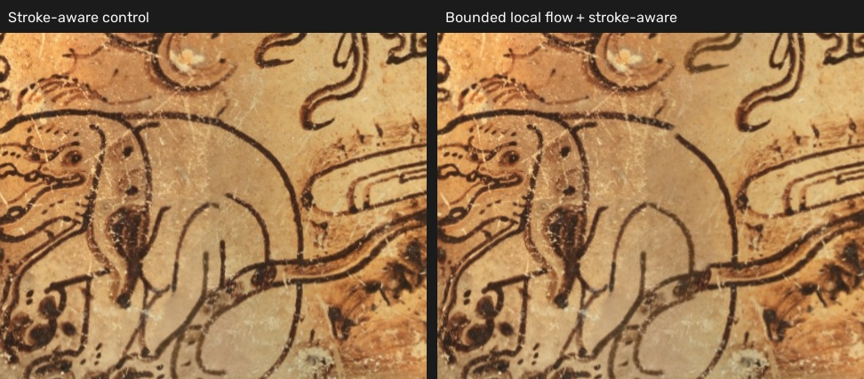
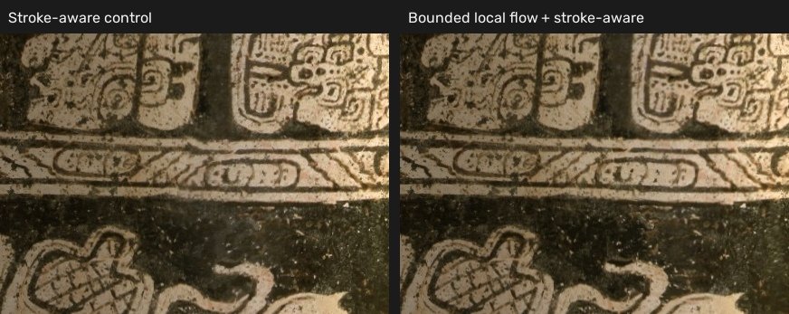
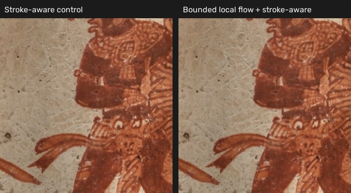

Both arms use the same source strips, global placement, and stroke-aware seam cost. The trial estimates dense motion directly between overlaps before selecting the cuts. It checks flow consistency, tapers at overlap edges, and limits the spatial derivatives of the warp to guard against folding. The displacement ceiling was 18 px. The largest actual displacement was 6.23 px.
Neither arm loads the museum rollout. The before-and-after crops use identical native image coordinates.

Full before · Full after · After with seam overlay · Diagnostics

Full before · Full after · After with seam overlay · Diagnostics

Full before · Full after · After with seam overlay · Diagnostics
Crossed rows are a routing measure. Inspect the close-ups for changes in actual strokes. This is an opt-in research experiment.